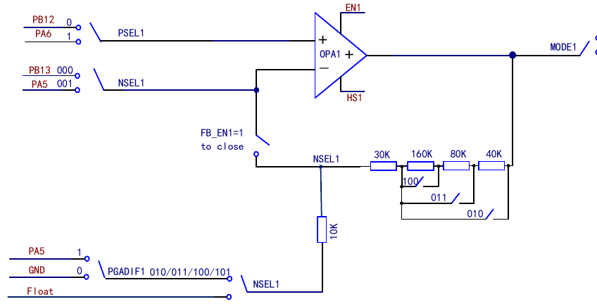

The Operational Amplifier module (OPA) contains one independently configurable operational amplifier. Both the input and output of the operational amplifier are connected to I/O ports with selectable pins. The operational amplifier (OPA or PGA) supports gain selection.
In the R32_OPA_CTLR register: setting EN1 enables the corresponding OPA1; configuring MODE1 selects the output channel of OPA1; configuring PSEL1 selects the positive input pin of OPA1; configuring NSEL1 selects the negative input channel of OPA1, or the gain when used as a PGA; setting FB_EN1 enables the PGA mode of OPA1; setting PGADIF1 enables the differential input PGA mode; setting HS1 enables the high-speed mode of OPA1.

| Name | Address | Description | Reset Value |
|---|---|---|---|
| R32_OPA_CTLR | 0x40023804 | OPA configuration register | 0x00000000 |
Offset address: 0x04
| 31 | 30 | 29 | 28 | 27 | 26 | 25 | 24 | 23 | 22 | 21 | 20 | 19 | 18 | 17 | 16 |
|---|---|---|---|---|---|---|---|---|---|---|---|---|---|---|---|
| Reserved | |||||||||||||||
| 15 | 14 | 13 | 12 | 11 | 10 | 9 | 8 | 7 | 6 | 5 | 4 | 3 | 2 | 1 | 0 |
|---|---|---|---|---|---|---|---|---|---|---|---|---|---|---|---|
| Reserved | HS1 | FB_EN1 | PGADIF1 | PSEL1 | NSEL1[2:0] | MODE1 | EN1 | ||||||||
| Bits | Name | Access | Description | Reset |
|---|---|---|---|---|
| [31:9] | Reserved | R0 | Reserved. | 0 |
| 8 | HS1 | RW | OPA1 high-speed mode enable: 1: Enable; 0: Disable. |
0 |
| 7 | FB_EN1 | RW | OPA1 PGA mode feedback enable: 1: Enable; 0: Disable. |
0 |
| 6 | PGADIF1 | RW | OPA1 works as a PGA with NSEL, and the N terminal is connected to OPA1_CHN1 (PA5): 1: Enable differential input PGA mode; 0: Disable differential input PGA mode. |
0 |
| 5 | PSEL1 | RW | OPA1 positive terminal channel selection: 1: OPA1_CHP1 (PA6); 0: OPA1_CHP0 (PB12). |
0 |
| [4:2] | NSEL1[2:0] | RW | OPA1 negative terminal channel selection and PGA gain selection: 000: OPA1_CHN0 (PB13); 001: OPA1_CHN1 (PA5); 010: PGA mode, no negative input channel, internal gain is 4; 011: PGA mode, no negative input channel, internal gain is 8; 100: PGA mode, no negative input channel, internal gain is 16; 101: PGA mode, no negative input channel, internal gain is 32; Others: Shutdown. |
0 |
| 1 | MODE1 | RW | OPA1 output channel selection: 1: Output signal through PA7; 0: Output signal through PB1. |
0 |
| 0 | EN1 | RW | OPA1 enable: 1: Enable; 0: Disable. |
0 |